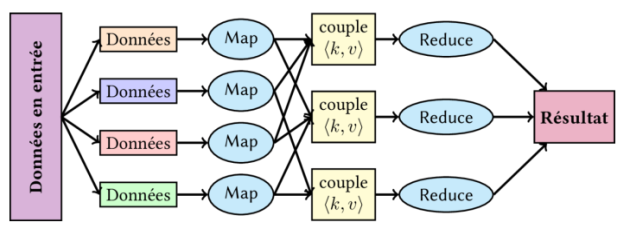
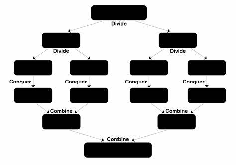

Patterns essentiels
Fork-join
Principe :
On découpe une tâche en plusieurs sous‑tâches indépendantes (fork), on exécute ces sous‑tâches simultanément sur plusieurs cœurs, puis on combine (join) leurs résultats pour produire la réponse finale.
Étapes :
1. Fork : création de sous‑tâches à partir de la tâche principale.
2. Exécution parallèle : chaque sous‑tâche s’exécute sur un cœur distinct.
3. Join : agrégation des résultats partiels pour reconstituer la solution complète.
`
Exemple d’application: nous avons utilisé le package parallel pour diviser la tâche de calcul de la moyenne de la variable SPEED du jeu de données ships en plusieurs sous-tâches exécutées simultanément sur plusieurs cœurs. Chaque cœur effectue un calcul partiel de la moyenne, et les résultats obtenus sont affichés pour chaque cœur avant l’agrégation finale.
library(readr)
library(dplyr)
library(parallel)
library(tictoc)
ships <- readr::read_csv("Donnees/ships.csv", show_col_types = FALSE) # Pour ne pas afficher les infos sur les colonnes
# Étape 1 : Préparation des données (données sans valeurs manquantes)
donnees_filtrees <- ships %>%
filter(!is.na(SPEED), SPEED > 0)
# Étape 2 : Définition de la fonction
tache_moyenne <- function(data) {
mean(data$SPEED, na.rm = TRUE)
}
# Étape 3 : Configuration du cluster pour 3 workers
cl <- makeCluster(2)
# Exportation des données et fonction vers chaque worker
clusterExport(cl, c("donnees_filtrees", "tache_moyenne"))
invisible(clusterEvalQ(cl, suppressMessages(library(dplyr)))) # Juste pour désactiver les messages pour les librairies
# Étape 4 : Exécution parallèle avec chronométrage
tic("Exécution en parallèle")
resultats_paralleles <- parLapply(cl, list(tache_moyenne), function(f) {
res <- f(donnees_filtrees) # Chaque worker calcule la moyenne de SPEED
cat("Résultat du cœur :", res, "\n") # Affiche le résultat de chaque cœur
return(res)
})
toc() # Chronomètre le temps d'exécution## Exécution en parallèle: 0.03 sec elapsed# Étape 5 : Arrêt du cluster
stopCluster(cl)
# Résultat parallèle
moyenne_parallele <- resultats_paralleles[[1]]
cat("Moyenne (calculée en parallèle) :", moyenne_parallele, "\n")## Moyenne (calculée en parallèle) : 37.31586Ici la tache demandée n’est pas vraiment complexe d’où le gain de temps n’est pas important.
Map Reduce
(Dans le cas où nous avons des données numériques, le schéma MapReduce s’apparente à un modèle Fork and Join, car il n’est pas nécessaire de manipuler des paires clé-valeur. Dans ce contexte, chaque worker traite simplement une portion des données, et les résultats sont ensuite agrégés directement. Nous illustrerons ensuite le cas où les paires clé-valeur sont nécessaires, à travers un exemple avec des chaînes de caractères.)
Le modèle MapReduce est utilisé pour traiter de grandes quantités de données en parallèle, c’est-à-dire en les traitant simultanément, mais de manière organisée. Il consiste en 4 étapes principales : Division des données, Map, Shuffle (Regroupement) et Reduce.
`
Étapes :
Division des données : Dans la phase de division, les données sont découpées en morceaux plus petits, pour un traitement plus rapide et facile.
Map : Une fois les données découpées, la phase Map entre en jeu. La fonction Map est appliquée à chaque morceau de données. Elle prend un morceau en entrée, le traite et génère des paires clé-valeur.La clé peut être n’importe quel identifiant ou valeur qui représente un élément spécifique du morceau de données. Par ailleurs, la valeur est un nombre qui représente l’information associée à cette clé. Dans beaucoup de cas, cette valeur est simplement un nombre 1, pour signifier que l’élément a été trouvé ou observé une fois.
Shuffle : Une fois les paires clé-valeur générées, il est temps de les regrouper pour les préparer à la phase Reduce. Elle consiste à regrouper toutes les paires ayant la même clé ensemble.
Reduce : La phase Reduce consiste à agréger les données regroupées par la phase Shuffle. Pour chaque groupe de paires ayant la même clé, une fonction Reduce est appliquée pour combiner ou résumer les valeurs.
Exemple 1 : Comptage des fréquences de chaque mot dans un texte
library(tictoc)
# Charger les librairies nécessaires
suppressPackageStartupMessages({
library(parallel)
})
# Texte à analyser
phrases <- c(
"Le chat mange le poisson",
"Le chien court après le chat",
"Le poisson nage dans l'eau"
)
# --- Phase MAP ---
map_function <- function(phrase) {
# Découpage de la phrase en mots (clés)
mots <- unlist(strsplit(tolower(phrase), "\\W+")) # Ignorer la casse et la ponctuation
# Génération des couples (mot, 1)
return(data.frame(mot = mots, valeur = 1))
}
# --- Phase REDUCE ---
reduce_function <- function(cles, valeurs) {
# Agrégation : somme des valeurs par clé
aggregate(valeur ~ mot, data = data.frame(mot = cles, valeur = valeurs), sum)
}
# Configuration du cluster (4 cœurs)
cl <- makeCluster(4)
clusterExport(cl, c("map_function", "reduce_function"))
# --- MAP ---
# Appliquer la fonction map à chaque phrase en parallèle
resultats_map <- parLapply(cl, phrases, map_function)
# --- SHUFFLE (Regroupement des clés) ---
# Combiner tous les résultats partiels
donnees <- do.call(rbind, resultats_map)
# --- REDUCE ---
# Appliquer la fonction reduce sur les données groupées
resultat_final <- reduce_function(donnees$mot, donnees$valeur)
# Arrêt du cluster
stopCluster(cl)
print(resultat_final)## mot valeur
## 1 après 1
## 2 chat 2
## 3 chien 1
## 4 court 1
## 5 dans 1
## 6 eau 1
## 7 l 1
## 8 le 5
## 9 mange 1
## 10 nage 1
## 11 poisson 2Divide & Conquer
Principe :
On résout un problème en le divisant récursivement en sous‑problèmes plus petits, jusqu’à ce qu’ils soient assez simples pour être résolus directement. Ensuite, on combine les solutions de ces sous‑problèmes pour obtenir la solution du problème initial.
Étapes :
1. Diviser : séparer le problème en deux (ou plusieurs) sous‑problèmes de taille réduite.
2. Conquer (Régner) : résoudre chaque sous‑problème, éventuellement en réappliquant récursivement la même méthode, jusqu’à obtenir des sous‑listes de taille suffisamment petite pour être traitées simplement.
3. Combiner : fusionner les solutions des sous‑problèmes pour former la solution finale.
`